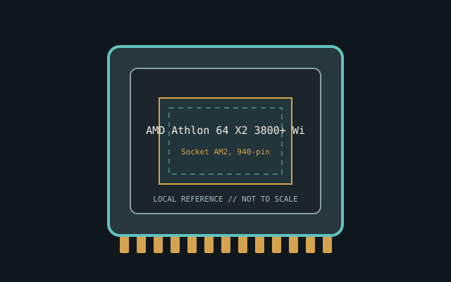

[ INDIVIDUAL CPU COMPONENT ]
AMD Athlon 64 X2 3800+ Windsor
Windsor, 2006; 2C/2T, 2.0 GHz, 2x512 KB L2, DDR2 controller, 89 W class Model-specific record; confirm the complete part marking before installation.

IDENTIFICATION: AMD Athlon 64 X2 3800+ Windsor. Product name alone does not establish package, stepping, voltage or firmware compatibility.
Verified model specifications
| Catalog path | Amd → AMD K8 / Athlon 64 and Opteron |
|---|---|
| Model and compute | Windsor, 2006; 2C/2T, 2.0 GHz, 2x512 KB L2, DDR2 controller, 89 W class |
| Package / socket | Socket AM2, 940-pin |
| Compatibility | AM2 BIOS and DDR2; not Socket 939/DDR |
| Stepping and variants | Windsor OPNs include voltage/thermal variants |
Compatibility and service
- AM2 BIOS and DDR2; not Socket 939/DDR
- Windsor OPNs include voltage/thermal variants
- Record OPN and BIOS; distinguish earlier 939 versions
- Confirm board manual, exact CPU support list, firmware, voltage/power, memory and cooling before use; never force a package.
Service & archival notes
Record OPN and BIOS; distinguish earlier 939 versions
Photograph package, markings, contacts and date/lot codes before repair. Log host board, BIOS/microcode, memory, cooler, condition, provenance and source revision.
Sources & further reading
- AMD processor specifications — AMD Athlon 64 X2 3800+ WindsorManufacturer catalog; search exact model and OPN.
- AMD support documentationManufacturer platform documents; verify motherboard BIOS separately.
Manufacturer documents take precedence. Family-level references may not resolve every stepping; verify the marking and motherboard CPU list.